Pregnancy diagnosis answers the most valuable question on a dairy farm: is this cow pregnant, or is she open? Every day an open cow goes unnoticed costs feed, lost milk and a longer calving interval. Early, accurate diagnosis — by rectal palpation or ultrasound — lets the farmer rebreed open cows quickly and manage pregnant cows correctly.
This guide explains rectal palpation and reproductive ultrasonography step by step, when each method works, what the veterinarian checks (fetal development, viability and twins), and how to monitor pregnancy and follow up non-pregnant cows.
Rectal Palpation — How It Is Done
Rectal palpation is the classic, low-cost method of pregnancy diagnosis. The veterinarian feels the reproductive tract through the wall of the rectum. It is reliable from about 35 to 45 days after service in experienced hands, and it needs no equipment — only skill, a glove and lubricant.
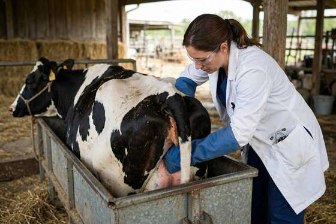
Rectal palpation — reliable from about 35 to 45 days after service
1
Restrain the cow safely(Cow held calmly in a crush or with a halter; the examiner works from behind)
2
Glove, lubricate and clear the rectum(Long obstetrical glove with lubricant; dung is gently removed so the uterus can be felt)
3
Locate the cervix and uterus(The cervix is the firm landmark; the uterine horns lie just in front of it)
4
Feel for pregnancy signs(A fluid-filled horn, the slip of the fetal membranes, and later the fetus and placentomes)
5
Check the ovaries(A corpus luteum on one ovary supports pregnancy; its absence suggests the cow is open)
6
Record the result and stage(Pregnant or open, approximate stage, and any abnormality — written in the breeding record the same day)
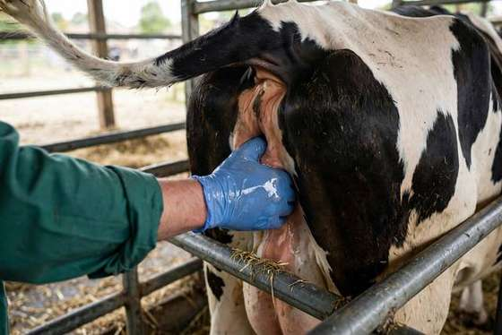
Rectal palpation — feeling the uterus through the rectal wall
Important: rectal palpation must only be performed by a trained veterinarian. Rough or careless palpation in early pregnancy can damage the embryo and cause abortion. Never attempt it without proper training.
Reproductive Ultrasonography — How It Is Done
Ultrasound uses sound waves to show a live picture of the uterus on a screen. A transrectal probe is used in cattle, and pregnancy can be confirmed earlier than with palpation — from about 26 to 30 days after insemination.
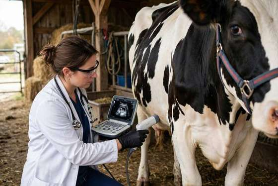
Ultrasound — pregnancy visible from about 26 to 30 days
1
Prepare the scanner(Portable ultrasound unit with a transrectal linear probe, charged and ready)
2
Restrain the cow and clear the rectum(Same safe restraint as palpation; dung removed so the probe contacts the rectal wall)
3
Insert the probe and scan the uterus(The probe is guided over each uterine horn while the screen is watched)
4
Identify the embryonic vesicle(A dark fluid-filled vesicle in the uterus is the first sign of pregnancy)
5
Confirm the embryo and heartbeat(From about day 26 the embryo and its beating heart can be seen — proof of a live pregnancy)
6
Check for twins and record the result(Two vesicles or two heartbeats mean twins; the result is recorded with the scan date)
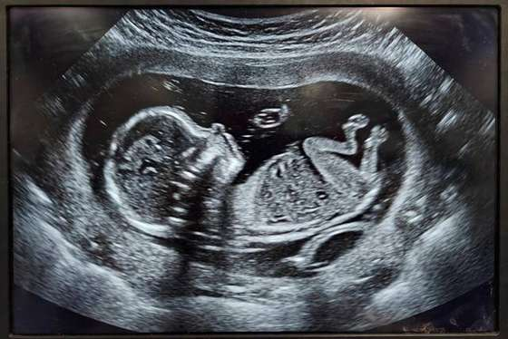
The ultrasound screen — the fetus and heartbeat confirm a live pregnancy
What the Veterinarian Checks — Fetal Development and Viability
Diagnosis is more than a yes-or-no answer. A good pregnancy examination checks that the pregnancy is alive and developing normally, and catches problems early.
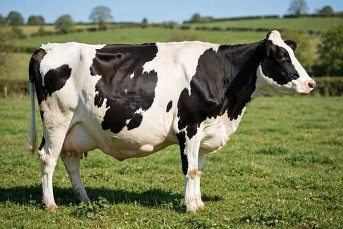
A healthy pregnancy — the goal of every breeding programme
1
Embryo and heartbeat(A beating heart confirms a live embryo; its absence in a vesicle suggests embryonic death)
2
Fetal development and size(Fetal size is compared with the expected stage — a small or undeveloped fetus needs rechecking)
3
Twin detection(Twins carry higher risks of abortion, dystocia and retained placenta — early detection allows planning)
4
Fetal sexing (from about day 55–60)(An experienced operator can determine fetal sex by ultrasound — useful for planning replacements)
5
Uterine health(Fluid, infection or abnormality of the uterus is noted — some conditions need treatment)
6
Reconfirmation around day 60(A second check confirms the pregnancy is continuing, as early embryonic loss is common)
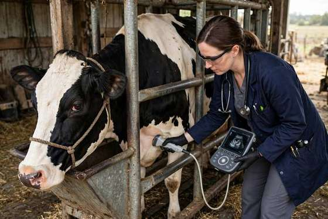
Fetal sexing from about day 55–60 — plan your replacements
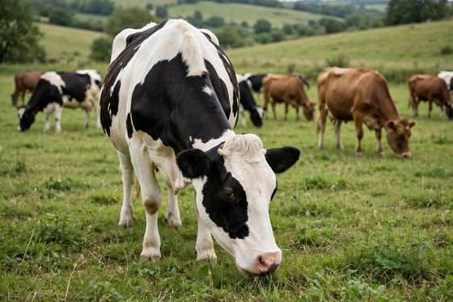
Early pregnancy — the cow looks normal; only a vet check confirms it
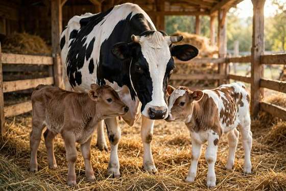
Twins — early detection allows a planned calving
Pregnancy Monitoring and Management
A confirmed pregnancy needs a plan. The pregnant cow's feeding, housing and health care change as pregnancy advances, and the calving date must be known in advance.
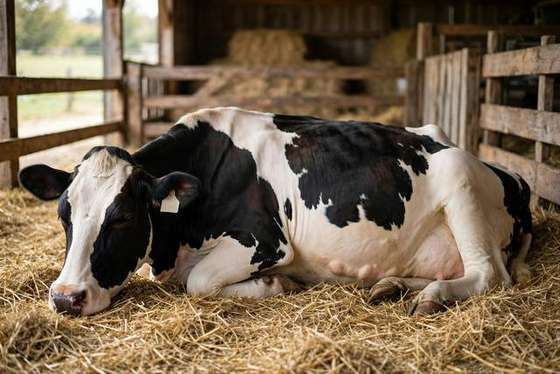
Close-up care in late pregnancy — clean, quiet maternity housing
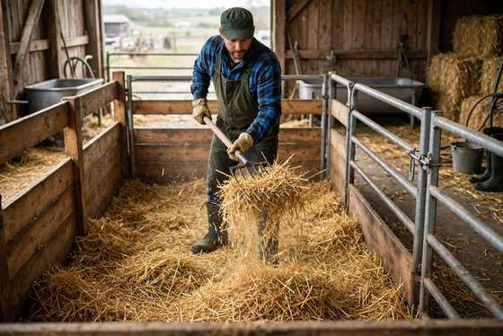
Preparing the calving pen — clean, dry, fresh straw
Expected calving date: gestation in cattle is about 283 days (roughly 9 months and 10 days) — count forward from the service date and write it on the record.
Feeding: increase feed gradually in the last two months, when the fetus grows fastest; avoid over-fat cows, which suffer more dystocia and metabolic disease.
Dry period: dry the cow off about 60 days before calving so the udder rests and the next lactation starts well.
Vaccination and deworming: follow the herd health programme; some vaccines are given in late pregnancy to protect the newborn calf through colostrum.
Maternity pen: move the cow to a clean, dry, quiet calving pen with fresh bedding a few days before the expected date.
Watch for abortion: any discharge, return to heat, or loss of pregnancy signs after confirmation must be reported to the veterinarian at once.
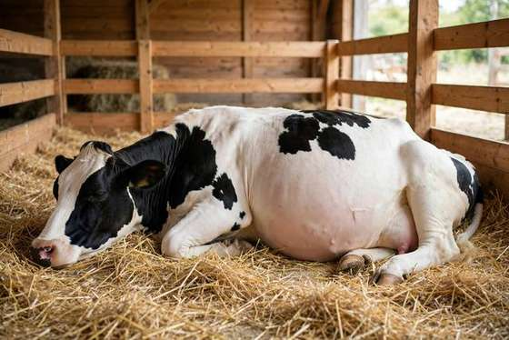
Dry cow in late pregnancy — resting in the maternity pen before calving
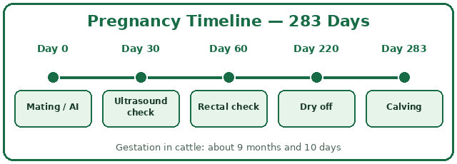
Pregnancy Timeline — 283 days from mating to calving
Non-Pregnant Cow Follow-Up
An open cow is not a failure — it is information. The faster she is found, the faster she can be rebred. Every open diagnosis should trigger a plan, not a wait.
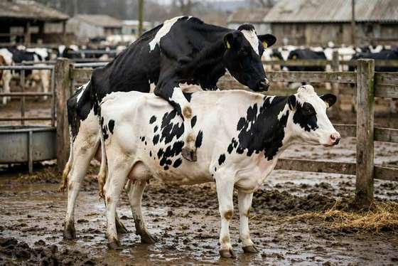
Return to heat — the first sign that the cow is not pregnant
1
Check heat detection first(Most open cows were simply bred at the wrong time — review heat records before blaming the cow)
2
Examine the reproductive tract(Uterine infection, ovarian cysts and silent heat are common causes — the veterinarian can diagnose them)
3
Correct feeding and minerals(Thin cows and mineral deficiencies delay return to heat — improve the ration first)
4
Rebreed at the next true heat(Watch closely and inseminate at the right time — or use a synchronization protocol advised by the veterinarian)
5
Full fertility examination after three failures(A repeat breeder needs a complete work-up before more services are wasted)
⚠ Important Tips:
Check pregnancy 30 to 60 days after every service — never assume a cow is pregnant.
Reconfirm early pregnancies around day 60 — embryonic loss is common and silent.
Record every diagnosis with the date and the examiner's name.
Handle pregnant cows gently — stress, rough handling and long transport can cause abortion.
Twins need a planned calving — warn the veterinarian in advance.
Frequently Asked Questions
How is pregnancy diagnosed in cattle?
Pregnancy in cattle is diagnosed by a veterinarian using rectal palpation from about 35 to 45 days after service, or by transrectal ultrasound from about 26 to 30 days. Ultrasound is earlier and shows the embryo, heartbeat and twins; palpation is cheaper and widely available. Blood and milk progesterone tests are also used.
When can ultrasound detect pregnancy in cows?
Transrectal ultrasound can detect pregnancy in cows from about 26 to 30 days after insemination. At this stage the embryonic vesicle and heartbeat can be seen. For reliable results, most veterinarians scan at 30 to 35 days, and confirm again around 60 days because early embryonic loss can occur.
What is rectal palpation for pregnancy diagnosis?
Rectal palpation is a manual examination in which the veterinarian, wearing a long glove, feels the uterus through the rectal wall. From about 35 to 45 days the signs are a fluid-filled uterus, a slip of the fetal membranes, and later the fetus itself and the placentomes. It must only be done by a trained veterinarian, as rough handling can harm the pregnancy.
Why is early pregnancy diagnosis important in dairy herds?
Early diagnosis finds non-pregnant cows quickly so they can be rebred without wasting weeks — every open day costs feed and lost milk. It also lets the farmer feed, dry off and manage pregnant cows correctly, detect twins early, and confirm that the breeding programme is working.
Can ultrasound detect twins in cattle?
Yes. Transrectal ultrasound from about 30 days can show two embryos or two heartbeats, confirming twin pregnancy. Early twin detection matters because twin pregnancies carry a higher risk of abortion, dystocia and retained placenta, so the cow needs closer monitoring and a planned calving.
How do I know if my cow is pregnant after AI?
The first sign is that the cow does not return to heat 21 days after insemination. But only a veterinary check confirms pregnancy — ask your veterinarian for a rectal examination about 45 to 60 days after AI, or an ultrasound from 30 days. Do not rely on the absence of heat alone.
What should I do if my cow is not pregnant after insemination?
Have the veterinarian examine the cow: check for heat detection mistakes, uterine infection, ovarian cysts or poor body condition. Treat any problem found, improve feeding and minerals, and rebreed at the next true heat. A cow that fails to conceive after three services needs a full fertility examination.
گائے کے حاملہ ہونے کا پتہ کیسے چلتا ہے اور الٹراساؤنڈ کب کروانا چاہیے؟
حمل کی تصدیق ڈاکٹر کے معائنے سے ہوتی ہے — ہاتھ سے معائنہ (ریکٹل پالپیشن) ملاپ کے تقریباً 35 سے 45 دن بعد اور الٹراساؤنڈ تقریباً 26 سے 30 دن بعد ہو سکتا ہے۔ الٹراساؤنڈ سے بچے کی دھڑکن اور جڑواں بچے بھی نظر آتے ہیں۔ ہیٹ نہ آنا حمل کی علامت ہو سکتی ہے لیکن حتمی تصدیق ڈاکٹر ہی کرتا ہے۔
Key Takeaway
Early pregnancy diagnosis pays for itself many times over: open cows are rebred quickly, pregnant cows are fed and managed correctly, and twins and problems are found before they become emergencies. Combine ultrasound or palpation at 30 to 60 days with a reconfirmation at day 60, keep the records, and let the veterinarian — not guesswork — decide the next step. Follow current local veterinary authority guidance for examination and record keeping.